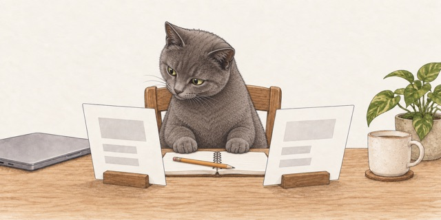
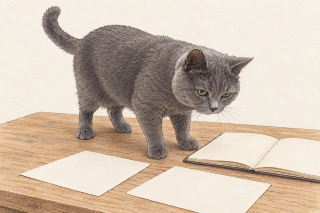
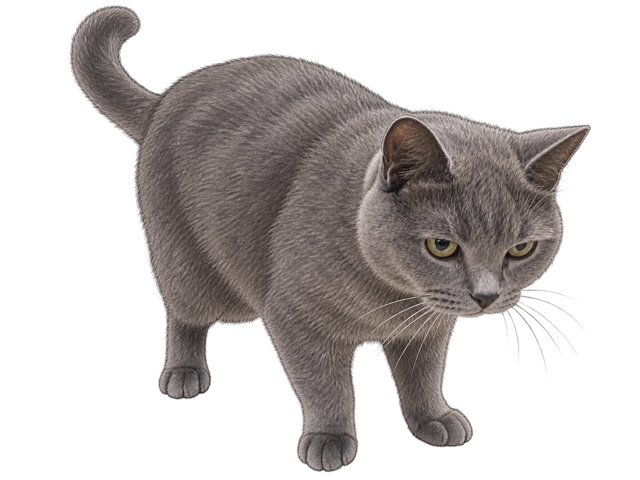

真实姿态与透明角色 · 历史探索
最新澄清：讲师指出的是扭头诡异，并不反对适度拟人；角色应与章节内容互动。本页做法不作为当前方向。查看新的圆猫爪互动对照 →
姿势照片与画风参考分开使用，比较重新布置场景与复用透明角色两种做法
2026-10-07 · 两个流程各生成一次，待讲师比较 · 正式课件未替换
整体构图对照
旧稿 · 讲师已指出仍不自然

新样本 · 从真实站姿起稿

角色与课程内容分别制作
同一张透明角色图复用到三个章节；这里切换的是内容，猫的姿态保持不变

对象键换序，算不算变化？
Before
{"a": 1, "b": 2}After
{"b": 2, "a": 1}批准规则：忽略对象键顺序
本章建立规格与验收，不改生产代码
透明图已检查 Alpha 通道；一条后腿受视角遮挡，不能声称满足“四足全部可见”。这个姿态、透明边缘和画法仍需讲师确认。以后可增加少量已确认的坐姿、趴姿素材；不靠拉伸同一张图伪造动作
本轮研究建议
停止在失败的办公坐姿上继续修爪。先确认猫的完整自然姿态，再组合章节内容；少量章首场景使用姿势参考重新生成
Prompt 的目标和保留项不能互相冲突。两个新样本同时改变参考和构图，无法证明某个措辞普遍更有效
完整研究、来源与制作取舍 · 素材与 Prompt